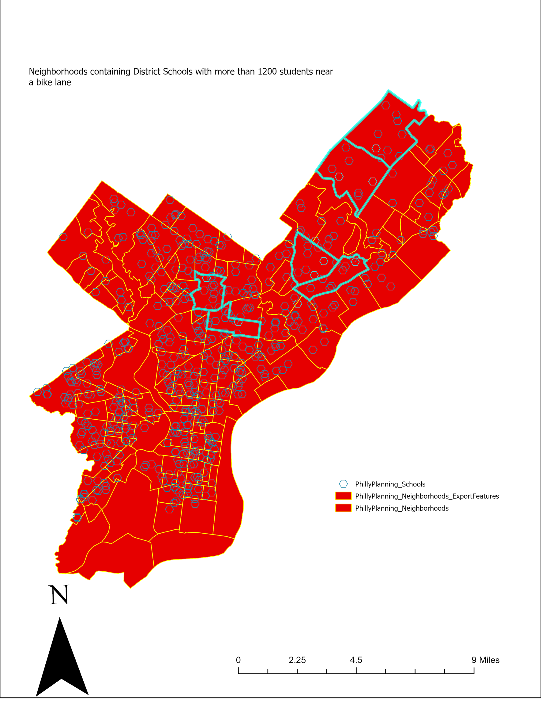
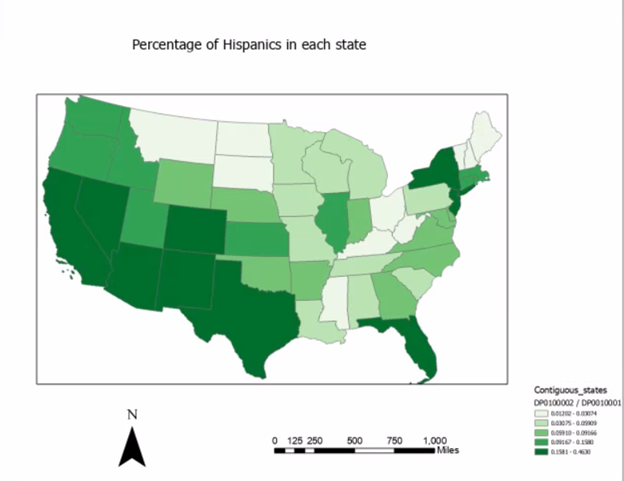

Fundamentals of Geographic Information System
Take a walk with me on this Journey
Start scrolling!
For this post, I used ArcGIS Pro to figure out which Philadelphia School District schools are close to the city’s bike lanes. I identified a list of schools with their enrollment numbers and identified the different neighborhoods they’re in. The main skills used were opening GIS data, checking attribute tables, running searches, and stacking different types of queries. For this post, a school counts as well connected if it’s within 0.1 miles of a bike lane. I was able to solve the problem by finding the list of schools that meet the stated criteria.

This map illustrates the distribution of Hispanic populations across the contiguous United States, with darker green shades indicating a higher percentage of residents. The highest concentrations are clearly visible in the Southwest and West, particularly in states like New Mexico, Texas, Arizona, and California. Significant Hispanic populations are also represented in Florida and parts of the Northeast, such as New York and New Jersey. In contrast, much of the Midwest and Southeast appear in lighter shades, reflecting a lower percentage of Hispanic residents in those regions. Overall, the map highlights a distinct geographic pattern where the Hispanic community is most prominent in border states and major coastal hubs.
Charles Wright Email:Tuf31544@temple.edu Please reach out if you would like to learn more about Geographic Systems .